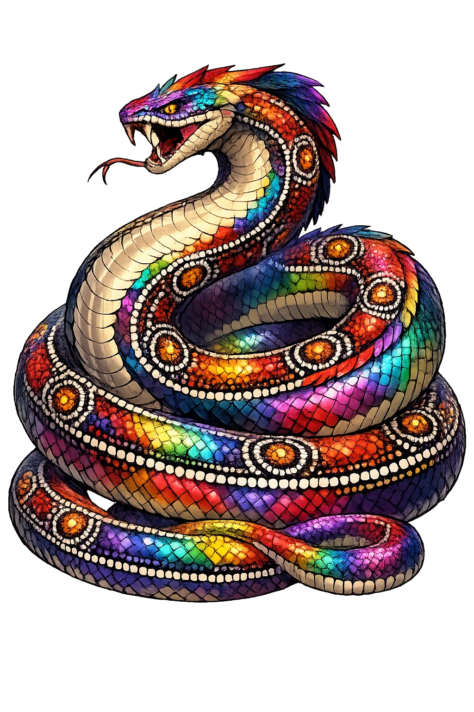
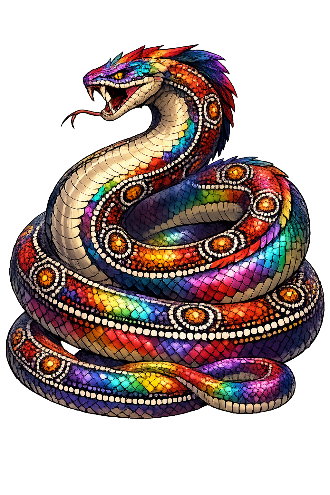

Unicode restoration and ASCII comparison
Ngalyod
The name survives in scholarly transliteration. Ngalyod is the standard Aboriginal romanisation, documented in academic sources — “The rainbow”. Because the spelling uses only Latin letters, the form is the same in both ASCII and Unicode.
No indigenous writing system is securely attested for individual aboriginal names. The form shown is a modern scholarly transliteration.
ngalyod
The plain ngalyod form is identical to the Unicode restoration. Because this name is already written in Latin letters, no diacritics, stress, or script information were lost — only capitalization differs.
Ngalyod
The Unicode restoration does not need to recover lost marks for Ngalyod. Its value is canonical spelling and consistent cataloguing, not the reconstruction of erased orthography. The domain is readable as-is to both DNS and humanity.
Ngalyod.com → ngalyod.com
The non-ASCII characters in Ngalyod are encoded while the ASCII remains visible. To the DNS, it is Punycode. To humanity, it is Ngalyod.
How Ngalyod is preserved in writing
No indigenous writing system is securely attested for individual aboriginal names. The form shown is a modern scholarly transliteration.
Contribute scholarly provenance →Owned, ideal, and ASCII forms of Ngalyod
Ngalyod
The full Unicode restoration. ngalyod.com is not in the PuniCodex collection — it is watched for release; if it drops, this temple upgrades to an owned flagship.
How Ngalyod was spoken
Water, Law, Monsoon, and the Dreaming
Ngalyod is the great Rainbow Serpent of the Kunwinjku-speaking peoples of western Arnhem Land. In the wet season she — or he, for gender shifts with country and ceremony — arcs across the sky as the rainbow; in the dry she sleeps beneath the earth in waterholes, springs, and rocky escarpments. She is not merely a weather spirit: she is a creator being who carved out the rivers, stocked them with fish and waterlilies, and laid down the law that still governs the relationship between people, country, and kin.
Ngalyod is the rainbow itself, the visible sign of the serpent moving between waterholes and bringing the rains that renew the land.
In the dry season Ngalyod rests in permanent waterholes; to disturb or pollute those places is to risk the serpent's anger.
The Rainbow Serpent established moiety, marriage rules, and the ceremonial obligations that bind clans to country.
Ngalyod created the fish, waterlilies, and other foods of the wetlands; her body shaped the country people still live from.
Stories of Ngalyod
Ngalyod's stories are told in rock art galleries, song cycles, and ceremonial narratives across western Arnhem Land. The serpent is not a single fixed character but a continuum of powers: creator, law-giver, healer, and avenger. The myths explain why certain waterholes never dry, why the wet season returns, and why human beings must respect the boundaries between clans and countries.
In the Dreaming, Ngalyod travelled across a flat and featureless land. Where she raised her body, ridges and escarpments rose; where she lay down, waterholes and rivers formed. Her tracks are the deep channels that still carry floodwater in the wet. Every permanent waterhole is remembered as a place where the serpent paused, and each is owned and cared for by the clan whose ancestors witnessed her passage.
Ngalyod divided the people into moieties, the two halves of society whose rules of marriage, ceremony, and land ownership still structure Kunwinjku social life. The serpent's law is not written down; it is sung, painted, and enacted in ceremony. To break it is to disturb the balance of country and to invite illness, accident, or the withdrawal of the waters.
When the first storms build over the Arnhem Land plateau, elders say that Ngalyod is moving from one waterhole to another. The rainbow is her body seen between earth and sky; the thunder is her voice. The arrival of the wet season is therefore not only a meteorological event but a ceremonial one, requiring the songs and restrictions that announce the serpent's presence.
A widely recorded story tells of a boy who mocked or wounded Ngalyod. In retaliation the serpent swallowed him and carried him underground through the water system, eventually releasing him far from his own country — or, in some versions, transforming him into a landmark. The tale teaches that the sacred must be approached with restraint, and that waterholes are not ordinary places.
Ngalyod is not a god in the sense of a being who stands outside the world and rules it. She is country itself in serpent form: the water that does not forget, the law that does not sleep, the rainbow that returns after every drought. To speak her name is to acknowledge that the land is not inert backdrop but a living body with memory.
Enter Extended Lore